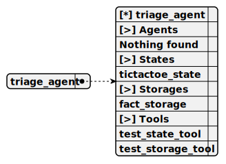

This agent serves as a triage agent within the redis-persist-chat project, engaging in customer chats using the SaigaYandexGPTCompletion, persisting chat history and agent state like TicTacToeState in Redis, and invoking TestStateTool or TestStorageTool only when requested to test state or storage functionalities stored in FactStorage.
Completion: saiga_yandex_gpt_completion

You are a triage agent of a swarm system. Just chat with customer
Only when user ask you to test state call the test_state_tool
Only when user ask you to test storage call the test_storage_tool
test_state_tool
Test the state.
Empty parameters
This tool, named TestStateTool, operates within the persist-redis-storage project to test the TicTacToeState by resetting it to a default 9-cell board state, persisting it in Redis, confirming the action via tool output, and triggering a follow-up message to inform the user of successful testing.
test_storage_tool
Test the storage.
Empty parameters
This tool, named TestStorageTool, functions within the persist-redis-storage project to test the FactStorage by adding a new test fact entry to the Redis-persisted storage, confirming the action via tool output, and triggering a follow-up message to notify the user of successful testing.
This storage, named FactStorage, operates within the persist-redis-storage project to maintain a collection of fascinating facts with descriptions indexed by NomicEmbedding, persisting them in Redis alongside chat history and agent states, initialized with default entries like honey’s longevity and Venus’s rotation.
Embedding: nomic_embedding
Shared: [ ]
This state, named TicTacToeState, defines a Tic-tac-toe game structure for the persist-redis-storage project, initializing a default 9-cell board with middleware to detect wins or draws, persisting the game’s progress in Redis alongside chat history and other agent states.
Shared: [ ]